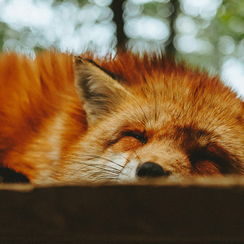
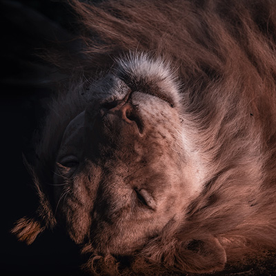
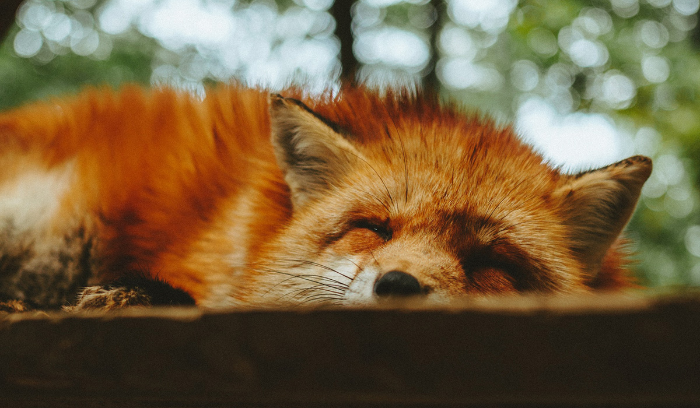

Animais Fantásticos


Raposa Vermelha (Vulpes vulpes)
As raposas são animais mamíferos e onívoros pertencentes à família Canidae. São vulpídeos de porte médio, caracterizados por um focinho comprido e uma cauda longa e peluda.
Também apresentam como particularidade suas pupilas ovais, semelhantes às pupilas verticais dos felídeos.
As raposas são animais mamíferos e onívoros pertencentes à família Canidae. São vulpídeos de porte médio, caracterizados por um focinho comprido e uma cauda longa e peluda.
Esquilo Vermelho (Sciurus vulgaris)
O esquilo-vermelho ou esquilo-vermelho-eurasiático (Sciurus vulgaris) é uma espécie de esquilo pertencente ao género Sciurus. É um roedor omnívoro que habita árvores, sendo muito comum por toda a Eurásia.
O esquilo-vermelho tem um comprimento típico de 19 a 23 cm (excluindo a cauda), uma cauda entre 15 e 20 cm de comprimento e um peso entre 250 e 340 g. Não apresenta dimorfismo sexual, pois machos e fêmeas têm o mesmo tamanho. Pensa-se que a longa cauda do esquilo o ajuda a manter o equilíbrio e postura quando salta de árvore em árvore e corre ao longo de ramos, podendo também ajudar o animal a manter-se quente durante o sono.
Urso Negro (Ursus americanus)
O Urso Negro (Ursus americanus), também conhecido como baribal, é um urso norte-americano, encontrado do Alasca ao Norte do México. Alcança 2,20 m de comprimento, 1,10 m de altura na cernelha e 360 kg de peso. O urso negro geralmente vive cerca de 15 anos, mas alguns podem alcançar até 40 anos. É um bom nadador e pode correr a até 50 km/h. Sua pelagem pode ser de cor negra, marrom, bege ou branca. Algumas subespécies estão ameaçadas de extinção.
Desde pequeno, o urso-negro tem grande habilidade para subir em árvores e montanhas. É principalmente um habitante da floresta, mas sua pelagem espessa permitiu que se dispersasse para o norte até os limites da tundra. No inverno, hiberna em uma toca, geralmente um oco sob uma árvore caída, dentro de um tronco toco ou em uma toca abandonada.
Lobo Cinzento (Canis lupus)
É uma espécie de mamífero canídeo do gênero Canis. É um sobrevivente da Era do Gelo, originário do Pleistoceno Superior, cerca de 300 mil anos atrás. É o maior membro remanescente selvagem da família Canidae.
Os lobos-cinzentos são tipicamente predadores ápice nos ecossistemas que ocupam. Embora não sejam tão adaptáveis à presença humana como geralmente ocorre com as demais espécies de canídeos,os lobos se desenvolveram em diversos ambientes, como florestas temperadas, florestas tropicais, pantanos, praias, desertos, montanhas, tundras, selvas, taigas, campos (Savanas, Prados, Planícies, Estepes, Matagais,...) e até mesmo em algumas áreas urbanas e rurais.
Ao contrário dos ursos, que são solitários, semidiurnos e que dormem na hibernação, os lobos são animais migratórios, seminoturnos (metade noturno, metade diurno) e são gregários, ou seja, que preferem viver em alcateias ou matilhas.
Mandril (Mandrillus sphinx)
O mandril (Mandrillus sphinx) é um primata da família dos Cercopithecidae (Macacos do velho mundo), parentes próximos dos babuínos e ainda mais próximos do dril. Tanto o mandril quanto o dril eram antes classificados como babuínos do gênero Papio, mas pesquisas recentes determinaram que eles deveriam constituir um gênero à parte, Mandrillus
O mandril é reconhecido pela sua pelagem verde-oliva e a face e nádegas multicoloridas nos machos, coloração que se torna mais intensa à medida que chega a maturidade sexual, tornando-se ainda mais pronunciada nos momentos de excitação.
Eles podem crescer até medirem cerca de um metro e podem viver até 25 anos. As fêmeas alcançam a maturidade sexual com aproximadamente 3,5 anos.
Leão Asiático (Panthera leo leo)
O leão-asiático (Panthera leo leo), também chamado de leão-indiano ou leão-persa, é uma população de leão que está listada como em perigo de extinção pela UICN, devido a sua pequena população. Desde 2010, a população de leões asiáticos vem aumentando de forma constante ao redor do Parque Nacional da Floresta de Gir no oeste da Índia.
Desde 2017 devido às grandes semelhanças genéticas e morfológicas com o Leão Norte Africano e Leão da África Ocidental, e o Leão da África Central, a subspécie passou a estar agrupada como Panthera Leo Leo, abandonando-se assim a designação Panthera Leo Persica.
FAQ
- Qual a idade dos animais?
- As raposas são animais mamíferos e onívoros pertencentes à família Canidae. São vulpídeos de porte médio, caracterizados por um focinho comprido e uma cauda longa e peluda.
- Eles são fantásticos?
- Também apresentam como particularidade suas pupilas ovais, semelhantes às pupilas verticais dos felídeos.
- Qual a diferença ?
- As raposas são animais mamíferos e onívoros pertencentes à família Canidae. São vulpídeos de porte médio, caracterizados por um focinho comprido e uma cauda longa e peluda.
- Como proteger?
- Também apresentam como particularidade suas pupilas ovais, semelhantes às pupilas verticais dos felídeos.







Números
Contato

- contato@origamid.com
- +55 (21) 99234-5678
- Rua do Conde, nº 21
- Rio de Janeiro - RJ
- Doe 0 bitcoin para no ajudar
- Seg à Sex das 8 às 18